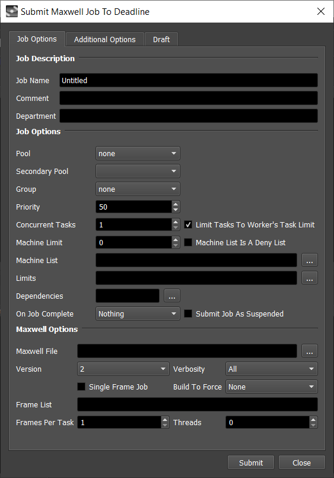
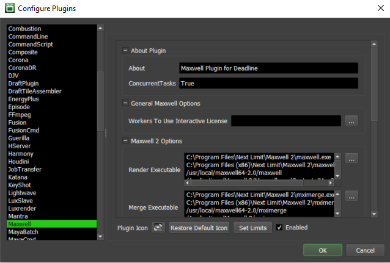

Maxwell¶
Job Submission¶
You can submit Maxwell jobs from the Monitor or via an in-app submitter such as MayaBatch as an export job.
Submission Options¶
The general Deadline options are explained in the Job Submission documentation, and the Draft/Integration options are explained in the Draft and Integration documentation. The Maxwell specific options are:
Maxwell Options
Maxwell File(s): The Maxwell files to be rendered. Can be a single file, or a sequence of files.
Version: The version of Maxwell to render with.
Verbosity: Set the amount of information that Maxwell should output while rendering.
Single Frame Job: This should be checked if you’re submitting a single Maxwell file only.
Build To Force: Force 32 bit or 64 bit rendering.
Threads: The number of threads to use during rendering. Specify 0 to use the default setting.
Co-op Rendering
Cooperative Rendering: Enable this to use Maxwell’s co-op rendering feature to render the same image across multiple computers. You can then use Maxwell to combine the resulting output after the rendering has completed.
Split Co-op Renders Into Separate Jobs: By default, a co-op render is submitted as a single job, where each task represents a different seed. If this option is enabled, a separate job will represent each seed.
Adjust Sampling Overrides For Cooperative Rendering: If this option is enabled, the sampling level given to each Worker will be reduced accordingly to ensure that final merged sampling level will match the requested one.
Number of Co-op Renders: The number of co-op render jobs to submit to Deadline.
Auto-Merge Files: Enable this option to auto-merge the co-op renders into the final image.
Fail On Missing Intermediate Files: If enabled, the auto-merge will fail if any co-op renders are missing.
Delete Intermediate Files: If enabled, the co-op renders will be deleted after the final image is merged together.
Output Options
Output MXI File: Optionally configure the output path for the MXI file which can be used to resume the render later. Note that this is required for co-op rendering though.
Output Image File: Optionally configure the output path for the image file.
Render Camera: Optionally specify which camera to render with.
Enable Local Rendering: If enabled, Deadline will save the output locally and then copy it to the final network location.
Resume Rendering From MXI File: If enabled, Maxwell will use the specified MXI file to resume the render if it exists. If you suspend the job in Deadline, it will pick up from where it left off when it resumes.
Overrides
Override Time: Enable to override the max rendering time setting in the Maxwell file (minutes).
Override Sampling: Enable to override the max sampling setting in the Maxwell file.
Extra Sampling (requires Maxwell 3.1 or later)
Override Extra Sampling: If the extra sampling settings should be overridden.
Enabled: If extra sampling is enabled.
Sampling Level: The extra sampling level.
Invert Mask: If the extra sampling alpha mask must be inverted.
Mask: The extra sampling mask.
Custom Alpha: The custom alpha name that will be used for the extra sampling mask (if Mask is set to Custom Alpha).
Bitmap File: The bitmap file that will be used for the extra sampling mask (if Mask is set to Bitmap).
Command Line Options
Additional Arguments: Additional command line arguments to pass to the renderer.
Resuming a Render¶
When specifying an MXI file, you now have the option to have Maxwell use it to resume a render job if that MXI file already exists. This means that if you suspend a Maxwell job from the Monitor mid-render, it will resume from where it left off when you resume the job.
Plugin Configuration¶
You can configure the Maxwell plugin settings from the Monitor. While in power user mode, select Tools -> Configure Plugins and select the Maxwell plugin from the list on the left.
Note, if the executable supports a MAJOR.MINOR.REVISION (9.0.123) numbering system in its path, then you will need to configure the explicit exe path to the particular revision that you have installed on your machines. Deadline does not track every possible revision available or indeed where it might be custom installed to, so a studio should verify their exe paths are correct for each application version they choose to use with Deadline. Multiple exe paths can still be declared and the first one that is found on a particular Worker on a particular platform will be used from the exe list.
General Maxwell Options
Workers To Use Interactive License: A list of Workers that should use an interactive Maxwell license instead of a render license. Use a , to separate multiple Worker names, for example: worker001,worker002,worker003
Maxwell Version Options
Render Executable: The path to the Maxwell executable file used for rendering. Enter alternative paths on separate lines. Different executable paths can be configured for each version installed on your render nodes.
Merge Executable: The path to the Maxwell executable file used for merging. Enter alternative paths on separate lines. Different executable paths can be configured for each version installed on your render nodes.
Cross-Platform Rendering Considerations¶
In order to perform cross-platform rendering with Maxwell, you must setup Mapped Paths so that Deadline can swap out file paths where appropriate. You can access the Mapped Paths Setup in the Monitor while in power user mode by selecting Tools -> Configure Repository. You’ll find the Mapped Paths Setup in the list on the left.
FAQ¶
Which version of Maxwell is supported by Deadline?
Versions 2 and later are supported.
Is Co-op Rendering supported?
Yes.
Can I resume from a previous Maxwell render?
If you have the Resume Rendering From MXI File option enabled when submitting the job, Maxwell will use the specified MXI file to resume the render if it exists. If you suspend the job in Deadline, it will pick up from where it left off when it resumes.
Error Messages and Meanings¶
This is a collection of known Maxwell error messages and their meanings, as well as possible solutions. We want to keep this list as up to date as possible, so if you run into an error message that isn’t listed here, please visit the Thinkbox Help Centre and let us know.
Currently, no error messages have been reported for this plugin.

{kind=link}
{kind=link}